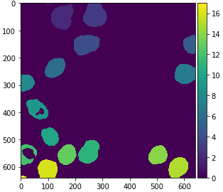

GPU-accelerated image processing using cupy and cucim
Contents
GPU-accelerated image processing using cupy and cucim#
Robert Haase, June 6th 2021
Processing large images with python can take time. In order to accelerate processing, graphics processing units (GPUs) can be exploited, for example using NVidia CUDA. For processing images with CUDA, there are a couple of libraries available. We will take a closer look at cupy, which brings more general computing capabilities for CUDA compatible GPUs, and cucim, a library of image processing specific operations using CUDA. Both together can serve as GPU-surrogate for scikit-image.
See also
Before we start, we need to install CUDA and CUCIM it properly. The following commands make this notebook run in Google Colab. Installation instructions for linux can be found here and other operating systems are not supported at the time of writing this.
!curl https://colab.chainer.org/install | sh -
!pip install cucim
!pip install scipy scikit-image cupy-cuda100
You can also go through this blog post as a google colab notebook
We can check the installation by importing all libraries we need.
import numpy as np
import cupy as cp
import cucim
from skimage.io import imread, imshow
import pandas as pd
In the following, we are using image data from Paci et al shared under the CC BY 4.0 license. See also: https://doi.org/10.17867/10000140
image = imread('https://idr.openmicroscopy.org/webclient/render_image_download/9844418/?format=tif')
imshow(image)

In order to process an image using CUDA on the GPU, we need to convert it. Under the hood of this conversion, the image data is sent from computer random access memory (RAM) to the GPUs memory.
image_gpu = cp.asarray(image)
image_gpu.shape
(640, 640, 3)
Extracting a single channel out of the three-channel image works like if we were working with
numpy.
Showing the image using scikit-image imshow does not work, because the CUDA image is not available in memory.
In order to get it back from GPU memory, we need to convert it to a numpy array.
single_channel_gpu = image_gpu[:,:,1]
# the following line would fail
# imshow(single_channel_gpu)
# get single channel image back from GPU memory and show it
single_channel = np.asarray(single_channel_gpu)
imshow(single_channel)
We can also do this within a convenience function, making our following code shorter and easier to read.
def gpu_imshow(image_gpu):
image = np.asarray(image_gpu)
imshow(image)
Image filtering and segmentation#
The cucim developers have re-implemented many functions from scikit image, e.g. the Gaussian blur filter, Otsu Thresholding after Otsu et al. 1979, binary erosion and connected component labeling.
from cucim.skimage.filters import gaussian
blurred_gpu = gaussian(single_channel_gpu, sigma=5)
gpu_imshow(blurred_gpu)
from cucim.skimage.filters import threshold_otsu
# determine threshold
threshold = threshold_otsu(blurred_gpu)
# binarize image by apply the threshold
binary_gpu = blurred_gpu > threshold
gpu_imshow(binary_gpu)

from cucim.skimage.morphology import binary_erosion, disk
eroded_gpu = binary_erosion(binary_gpu, selem=disk(2))
gpu_imshow(eroded_gpu)

from cucim.skimage.measure import label
labels_gpu = label(eroded_gpu)
gpu_imshow(labels_gpu)

For visualization purposes, it is recommended to turn the label image into an RGB image, especially if you want to save it to disk.
from cucim.skimage.color import label2rgb
labels_rgb_gpu = label2rgb(labels_gpu)
gpu_imshow(labels_rgb_gpu)
Quantitative measurements#
Also quantitative measurements using regionprops_table have been implemented in cucim. A major difference is that you need to convert its result back to numpy if you want to continue processing on the CPU, e.g. using pandas.
from cucim.skimage.measure import regionprops_table
table_gpu = regionprops_table(labels_gpu, intensity_image=single_channel_gpu, properties=('mean_intensity', 'area', 'solidity'))
table_gpu
{'area': array([ 238, 5833, 6006, 5679, 2534, 4200, 4655, 2662, 3846, 3350, 5005,
2200, 3952, 3837, 4298, 4111, 139]),
'mean_intensity': array([68.93277311, 54.14537974, 68.23676324, 59.95175207, 87.22178374,
71.32666667, 74.37529538, 64.63561232, 58.93213729, 66.88656716,
62.15684316, 50.51363636, 62.50177126, 92.24863174, 71.68776175,
51.80345415, 72.3381295 ]),
'solidity': array([0.97942387, 0.95842918, 0.97785738, 0.97964464, 0.98868513,
0.98522167, 0.98727466, 0.99143389, 0.87171351, 0.98355843,
0.96864718, 0.59945504, 0.98676654, 0.98510911, 0.98397436,
0.97997616, 0.97887324])}
# The following line would fail.
# pd.DataFrame(table_gpu)
# We need to convert that table to numpy before we can pass it to pandas.
table = {item[0] : cp.asnumpy(item[1]) for item in table_gpu.items()}
pd.DataFrame(table)
Note: As alternative, one may want to dive into cuDF the CUDA-based counterpart for pandas DataFrames.